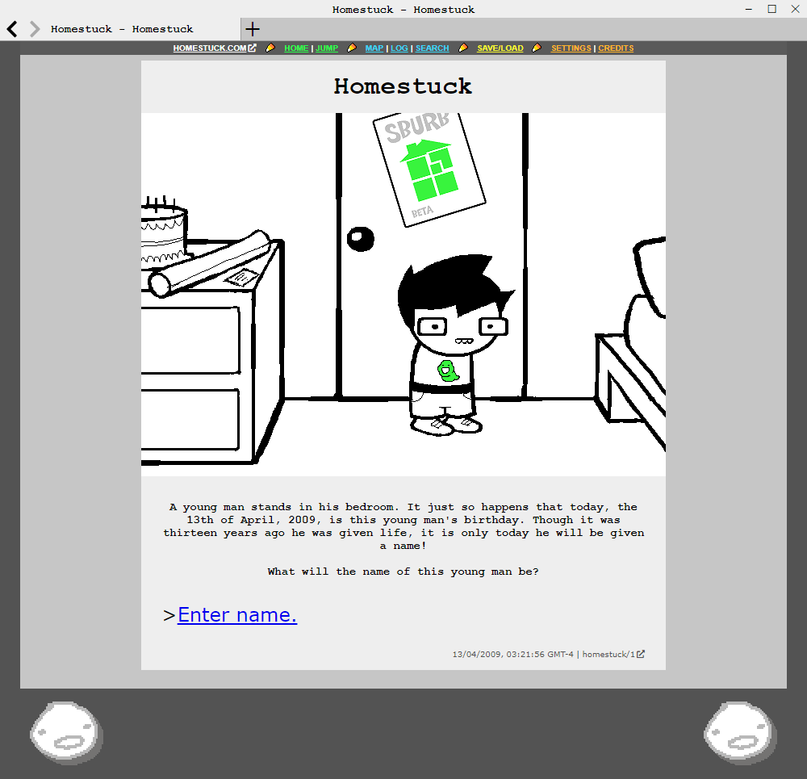

Let me tell you a story about a webcomic called Homestuck. The fourth in a series of “MS Paint Adventures” authored by Andrew Hussie from 2006 to 2016, it became wildly successful, in part because of its eclectic use of web technology like Adobe Flash and GIF animations.
However, with Flash finally being phased out at the end of 2020, Homestuck is in a precarious state. While there have been official attempts to preserve aspects of the original experience by VIZ Media (who have published Homestuck since 2018), the results have been mixed. With extra content scattered around the web in various states of decay, a solution was needed to preserve Homestuck's one-of-a-kind presentation and flair, for both returning readers and those new to the story.

YOUR WORST ADDICTION, NOW SAFE ON YOUR DESKTOP
The Unofficial Homestuck Collection is a heavily customised browser, built from the ground up to support Homestuck and its related works. Flashes? We got 'em. The collection runs Flash content natively, providing the most authentic Homestuck experience possible.
Don't get it twisted though, because "browser" in this context doesn't mean "online". The Unofficial Homestuck Collection is completely self contained, and never has to connect to the internet once you have it downloaded.
A ONE-STOP SHOP
Don't think we'd be content stopping at just Homestuck. The collection contains the other MS Paint Adventures, official Homestuck side-stories, and a garguantuan array of goodies for the enquiring reader. Seriously, there is SO MUCH CONTENT in this thing. It's totally ridiculous.
NEW READER? NO PROBLEM.
Always wanted to try Homestuck? Overwhelmed by all the side-stories and sequels, and frustrated by the late-arrival spoilers plastered all over the internet? We've got your back. From the very beginning, The Unofficial Homestuck Collection has been designed to work as a safe way for new readers to get their teeth into the Homestuck universe. If you so choose, all future content will be carefully gated off until your progress in Homestuck makes it safe to view.
THIS IS WHAT THE REFRANCE
The Unofficial Homestuck Collection contains a complete database of the Homestuck Bandcamp, up to the most recent album as of 10/25/2020. Want to know more about the crazy song you just heard in that Flash animation? Follow the link and see what's up! If you so choose, you can even enable an inline media player that legally streams the music directly from the source. You can try not to get lost exploring the twisted web of Homestuck's discography, but it's inevitable.
ENHANCED IN WAYS YOU CAN'T EVEN IMAGINE
We've got complete control over the browser, so you'd better believe we're taking advantage of it. Mid 2000's quality bitcrushed Flash audio? Nah, man. Almost every single flash in Homestuck has been painstakingly reworked with the highest quality music available. You have to hear it to believe it. Want to use themes on every page? Go nuts, I'm not the boss of you. Arrow key navigation? Automatically opening pesterlogs? You got it. Want absolutely none of the above? That's also an option! It's Homestuck, the way you want it.
DOWNLOAD THE APP
The application is a roughly 70 MB download, and requires the Asset Pack V1 to function. Future updates to the application may require an updated Asset Pack.
The Asset Pack V1 is a 3.68 GB download, and it's necessary in order to run the application. It contains all the text, images, animations, and everything else!
That's right! Well, almost. You probably saw above, but The Unofficial Homestuck Collection is actually split into two downloads: the desktop application itself, and the Asset Pack. In order to get it running, you need to pair the application with the asset pack the first time you start it up. The first thing you see will be a screen like this, with a "Locate Assets" button down the bottom. Once you have the Asset Pack downloaded, extract it anywhere you want. Even an external hard drive will work! Then hit the "Locate Assets" button, and select the extracted folder. The program will automatically restart, and bring you into the main browser!
That's an extremely good question. The issue with this is that it's so damn large I can't even remember everything inside off the top of my head. Here's a by-no-means exhaustive list:
Homestuck
Homestuck Music Database
Homestuck Beta
Sweet Bro & Hella Jeff
The Blog of Dave Strider
Namco High
Paradox Space
Snapchats
Skaianet Systems
Jailbreak
Bard Quest
Problem Sleuth
Problem Sleuth Science FAQ
Donation Commands
The Baby Is You
The Vigil Prince
Whistles: The Starlight Calliope
And It Don't Stop
Neon Ice Cream Headache
Steep Price For Pie
Inappropriate Time For Ham
Riddler's Gammon
Humanimals
Zoosmells
An Offer You Can't Refuse
A Magical Journey Through the Internet
Cheerfulbear - PLAY ME
The Man-On-Man Suckoff Challenge
MSPA Newspost archive
Blogspot, Formspring, and Tumblr
Desktop Wallpapers
Ryanquest
Morse code translator
Alternian cipher
And that's not even all of it? How big is this thing?
Wait, doesn't this have the Epilogues? Or Homestuck^2? What gives?
You! Giving to the Homestuck team, that is. The new age of Homestuck is going strong, and it needs your support to continue. I consider the Epilogues, HS^2, and the various games released over the past few years to be under active maintenance, and an ongoing source of income for the creators. Including those in the collection would feel scummy. The main reason it exists is to prevent the technological decay of Homestuck, not to "stick one to the man" or some garbage. Need to read the Epilogues offline? They made a book for that! It's literally just text! And speaking of books, go and check out Viz's line of deluxe Homestuck hardcovers. They have tons of author commentary you won't find in the collection, because again, I'm really not about harming these guys financially.
So, what's your endgame then?
Homestuck is suffering with the decline of Flash, and as long as it exists on the internet, these problems will be inherent to it. The ideal outcome for this collection is that it keeps Homestuck alive for people who may otherwise have given up on it, so they can continue to support all the official channels going forward. If this project results in even one new fan hopping on-board who otherwise wouldn't have, I would consider that a success.


{kind=link}
{kind=link}